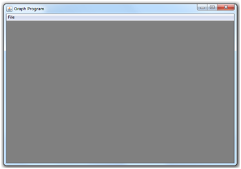
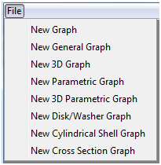
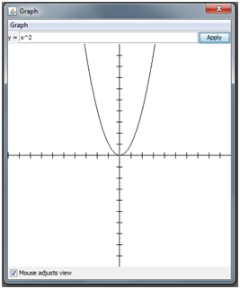
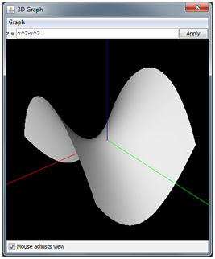

The first step is to open “Grapher.jar” by double-clicking on it. If it fails to open, make sure you have Java 1.6 or 1.7 installed. You should then arrive at this screen.
To start, click on the “File” menu. Several options should pop up. To verify that you have the version for the correct platform, click “New 3D Function Graph.” If a window pops up without an error message, the program is likely to work properly. Now, close the window.
This time, press “File, New Function Graph” (The “New Function Graph” button in the “File” menu). In the window that opens, type “x^2” in the text field (without quotes) and click apply. You should see a parabola. Try panning around by clicking and dragging the graph with the mouse to get a better view.
Close the graph, and this time, press “File, New 3D Function Graph”. In the window that opens, type “x^2-y^2” in the text field and click apply. You should see a hyperbolic paraboloid. You can rotate the view by clicking and dragging with the mouse. When you are ready, you can read on. The rest of this document will teach you details about the program.
In each of the nine types of graphs available to use, there are features common to all of them. Opening each type of graph displays a window of a similar format. In the menu bar, there is a “Graph” menu with an option to “Set Bounds” and a toggle option, “Show Axes”, which is on by default.
The “Set Bounds” button opens a separate window that lets you change certain properties of the graph. These properties are established when the “Apply” button on that window is pressed.
Also in the menu bar is a “Presets” menu which allows you to try out premade formulas. It also allows you to save a preset and load it later as a custom preset.
Just under the menu bar is a labeled text field or a set of labeled text fields that let you define the formula(s) for the function to graph, and an “Apply” button that displays the graph after entering in the formula(s). In the center of the window is the display of the graph, which has some mouse input, depending on whether the graph is 2D or 3D.
At the bottom of the screen is a checkbox labeled, “Mouse adjusts view”, selected by default, which toggles whether clicking and dragging the mouse will move the view around the graph. If the box is unchecked, the mouse instead alters the graph dynamically as defined by the user (see 2.3 and 2.4).
Typing in a formula for the graph program is relatively straightforward. For example, as long as x and y are variables used by the graph in question, the formula, “(3x*sin(xy))/(x+y+2)” is a valid formula.
The operations available for use are +, -, *, /, and ^, for addition, subtraction/negation, multiplication, division, and exponentiation, respectively. The order of operations is as expected, but exponentiation goes from left to right, which is contrary to what is most likely preferred, so use parentheses if you want the exponentiation to go from right to left.
Numbers can be written with simple numerals (e.g. 2 or 0.26) or with exponential notation (e.g. 2e12).
The available variables for use, depending on which graph type is being used, are x, y, s, t, u, and v.
Implied multiplication is permitted between multiple variables (e.g. xy or xx) and between a number and a variable (e.g. 9.2x or 3e2xy).
There are also multiple predefined functions available to use. The format for using them is the function name followed by its arguments enclosed in parentheses, separated by commas (e.g. sin(x) or min(2x,3)). The parentheses are mandatory. A few functions take no arguments because they are constants. These are the only exceptions to the parentheses rule (e.g. pi or e).
An important thing to note is that implied multiplication is NOT permitted when something is being multiplied by a function or special constant. For instance, 3sin(x) is not allowed and must be replaced by 3*sin(x). Even the constants do not work with implied multiplication. Although 3x is allowed, since x is a variable, 3e is not allowed. It must be replaced with 3*e. A reason for this is that 3e-1 is exponential notation for 3*10^(-1), while 3*e-1 is 3 times Euler’s number subtracted by 1. To prevent ambiguity, all special constants and functions must be multiplied with the asterisk operator.
Below is a list of all functions and special constants (With the number of arguments shown):
A few features common to all 2D graph types, “Function Graph”, “General Graph”, and “Parametric Graph” are discussed in this section.
The first feature discussed is the bounds window, which comes up after “Graph, Set Bounds” is selected. There are six text fields common to all 2D graph types, “x-min”, “x-max”, “y-min”, “y-max”, “x-scale”, and “y-scale”.
The first four fields mentioned determine the part of the graph that is visible. “x-min” gives the x-coordinate of the left edge of the viewport, and “x-max” gives the x-coordinate of the right edge of the viewport. “y-min” gives the y-coordinate of the bottom edge of the viewport while “y-max” gives the y-coordinate of the top edge of the viewport.
“x-scale” and “y-scale” determine the number of units between each marking on the x and y axes, respectively.
The second feature discussed is how the mouse is used to adjust the graph. The mouse has two different behaviors depending on whether the “Mouse adjusts view” checkbox is selected.
When it is selected, clicking and dragging with the left mouse button pans the view, and clicking and dragging with the right mouse button zooms into or out of the graph depending on where the mouse was clicked. Holding down shift while clicking and dragging is equivalent to using the right mouse button. Another way to zoom is to scroll in or out (Scrolling always works, regardless of the “Mouse adjusts view” checkbox).
When the “Mouse adjusts view” checkbox is unchecked, clicking and/or dragging the mouse adjusts two parameters, u and v, to the x and y position of the mouse, respectively, relative to the axes. The parameters u and v can be entered into any formula to dynamically alter the graph.
There are a few notable differences between the user interfaces of the 2D and 3D graphs.
The first notable difference is the display. Instead of having a white background and having two axes, it has a black background with three axes, red for x, green for y, and blue for z.
The next notable difference is the way the mouse is used to adjust the graph.
When the “Mouse adjusts view” checkbox is selected, clicking and dragging with the left mouse button rotates the camera around the graph with the camera, and clicking and dragging with the right mouse button or scrolling zooms in and out of the graph. (Scrolling always works, regardless of the “Mouse adjusts view” checkbox).
The view is centered at the origin initially. Holding the middle mouse button down and dragging the mouse moves the camera without changing its orientation, consequently changing the point it is centered on. The Bounds menu in all 3D graphs contains an option to adjust the point the view is centered on, “x-center (view)”, “y-center (view)”, and “z-center(view)”.
Holding down shift while clicking and dragging is an alternative way to zoom in or out, and holding down control while clicking and dragging is an alternative way to move the camera.
When the “Mouse adjusts view” checkbox is unchecked, clicking and dragging with the mouse adjusts the u and v variables to the horizontal and vertical positions of the mouse, respectively. When the mouse is on the left edge of the viewport (area where the graph is shown), u is -1, and when the mouse is on the right edge of the viewport, u is 1. When the mouse is on the bottom of the viewport, v is -1, and when the mouse is at the top of the viewport, v is 1. Like in 2D graphs, the parameters u and v can be entered into any formula to dynamically alter the graph.
A function graph is created by choosing the “New Function Graph” option in the file menu. A function graph is a 2D graph that takes a formula with the variables x, u, and v, and plots how y changes with respect to x (u and v are mouse coordinates for dynamic graphs. They are valid on every graph type, so they will not be mentioned on the other sections explaining graph types). The plotting algorithm is basic, and there will be artifacts with jump discontinuities or infinite discontinuities in the function.
A general graph is a 2D graph that takes a formula with the variables x and y and attempts to plot all the points where the formula equals 0. This can be used to plot equations such as x^2+y^2=9 by writing “x^2+y^2-9” in the formula bar. The algorithm used to plot the graph does remove artifacts that could be caused by infinite discontinuities and some jump discontinuities, but there are other artifacts under some circumstances.
The algorithm for this graph is inefficient, so some lag is to be expected when attempting to dynamically change the view or alter the graph, especially when the viewing window is expanded.
There is a bonus feature for this type of graph. When the “Graph, Invert Graph” toggle option is selected, the displayed graph becomes the original graph after a circle inversion about the unit circle.
A parametric curve is a 2D graph that takes two formulas with the variable t (One formula is for x and the other is for y). It then graphs how x and y change as t changes from t-min to t-max. t-min and t-max can be adjusted in the Bounds menu, as well as t-resolution, which chooses how many segments will be displayed. The default is for t to go from -1 to 1 with a resolution of 1000. Unfortunately, any jump in the parametric curve will be bridged by a line segment, like in a Function Graph.
This is a 3D graph that takes a formula with the variables x and y, and graphs how z changes with respect to x and y.
There are six text fields (other than the ones that adjust the view) in the Bounds menu. x-min, x-max, y-min, and y-max adjust the portions of the graph that are visible to the user. The defaults are -1 for th minimums and 1 for the maximums. These fields do not adjust the view like they do in 2D graphs. The view is mainly adjusted using the mouse instead. The x-resolution and y-resolution fields determine the detail of the graph. The default for both fields is 50, which is high enough for most purposes. They may need increasing in graphs with lots of detail, though. Do not adjust both fields past 1000, or you may experience excessive lag, and the application may freeze or crash.
Using formulas with discontinuities is not recommended with any 3D graphs because they will most likely form a dark wall bridging the discontinuity and obstructing the view of the graph. Also, singular points will create dark spots on the graph, but they are more ignorable.
This is a 3D graph that takes three formulas with the variable t, and graphs how x, y, and z change with respect t. By default, t goes from -1 to 1, and has a resolution of 1000, but that can be changed in the Bounds menu.
This is a 3D graph that takes three formulas with the variables s and t, and graphs how x, y, and z change with respect to s and t. By default, s and t each go from -1 to 1, and they have a resolution of 50, but that can be changed in the Bounds menu.
This is a 3D graph that takes two formulas with the variable x. The first formula, y1 acts as a lower bound for a 2D area, and the second formula, y2 acts as an upper bound. The left and right bounds (domain) can be adjusted in the Bounds menu, and the default is from -1 to 1. The graph displays the area in question revolved about the x-axis to form a solid. A new option in the Bounds menu, the rotational resolution, determines how many segments are used to form the revolution, and the other options are like before.
This is a 3D graph that is much like the disk/washer graph in that it takes two formulas with the variable x to form an area to revolve. However, this time, it revolves the graph around the y-axis.
Like the previous two graphs mentioned, the cross section graph takes two formulas with the variable x to form an area. However, instead of forming a solid of revolution, each y-slice of the resulting area is changed into the chosen figure (chosen in the Graph, Cross Section menu). As a result, each cross section of the resulting 3D figure parallel to the yz-plane is the same shape as the chosen figure. This figure will be upside down anywhere y1 is greater than y2.
A new option in the Bounds menu, circle resolution, determines the number of segments forming the circular surface in the cross section if the Circle or Semicircle option was chosen. Otherwise, this field is ignored.